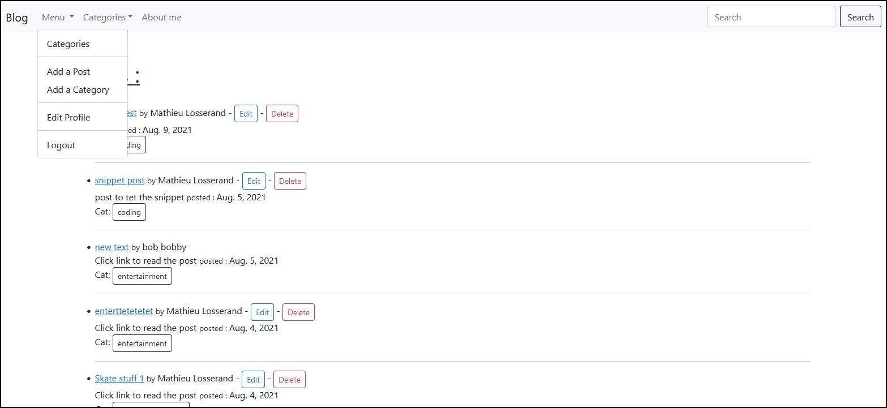
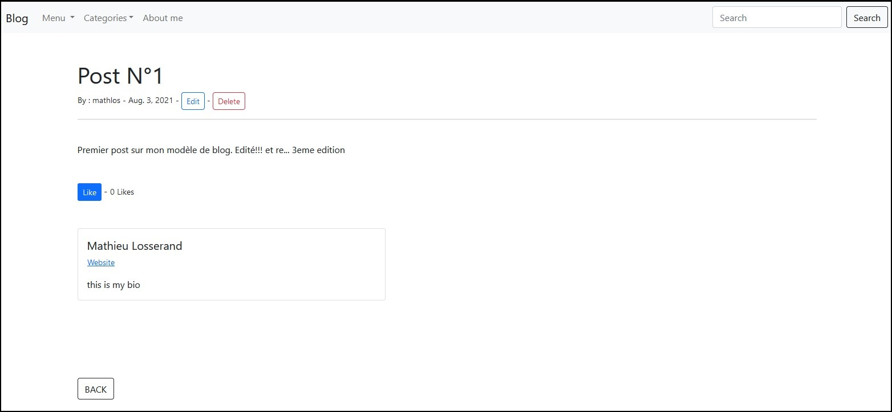
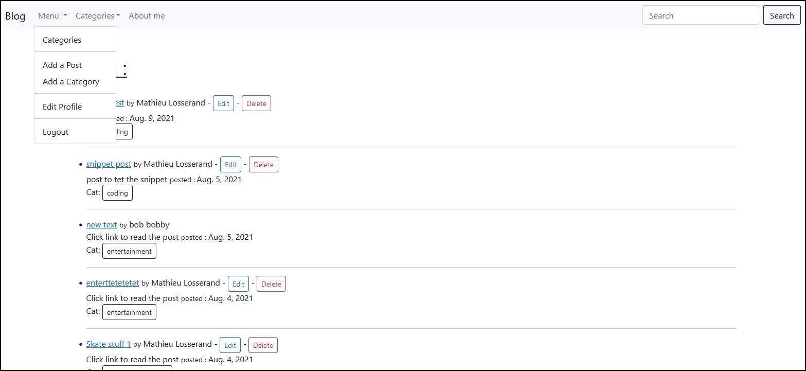
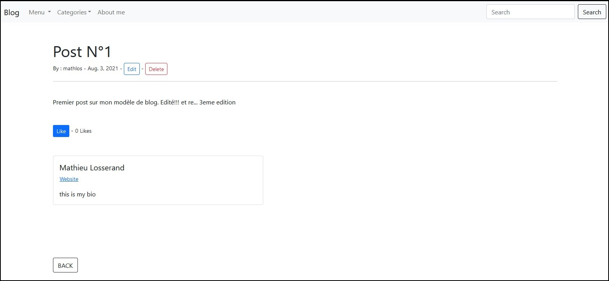

Le but de se projet est de pouvoir avoir une une structure de blog "toute prête" qui peut être utilisée et personnalisée rapidement.
A l'heure actuelle le blog permet de créer un compte, de modifier vos coordonées et mot de passe, de rédiger un post et de le modifier ou supprimer par la suite si vous en êtes l'auteur.
L'édition se fait via un éditeur plus élaboré (modification des polices couleurs et insertion de photos ... sont possibles).
On a la possibilité une fois connecté à son compte de liker ou disliker un post et un compteur affichera le résultat. Les posts sont classés par catégories et on peut toujours en étant, en créer une nouvelle.
Une fonction de recherche sera possible dans un futur proche et le projet n'est pas encore terminé.
La mise en page et le coté hestétique du site se feront suivant les exigences des clients et restent donc à définir, d'où le côté un peu brut du blog.
Projet donc encore en cours de développement, le plus gros du travail étant effectué.
Consulter le code du projet via Github
Technologies utilisées : HTML, CSS, Django, Bootstrap 5
Le code peut être modifier pour s'adapter aux exigences de chacun.
Code ouvert et les grosses modifications sont possibles.
Le côté front-end du site reste à la demande du client .
Copyright © Mathieu Losserand
 


